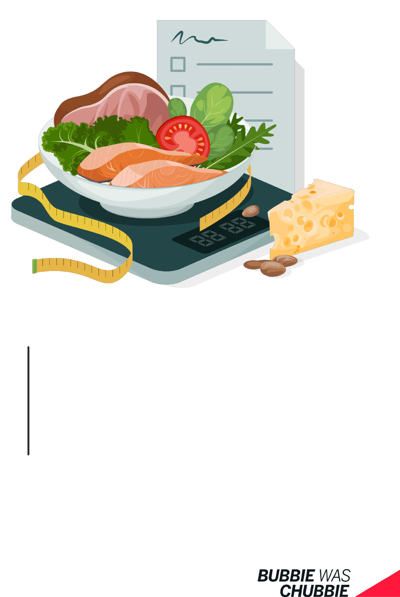
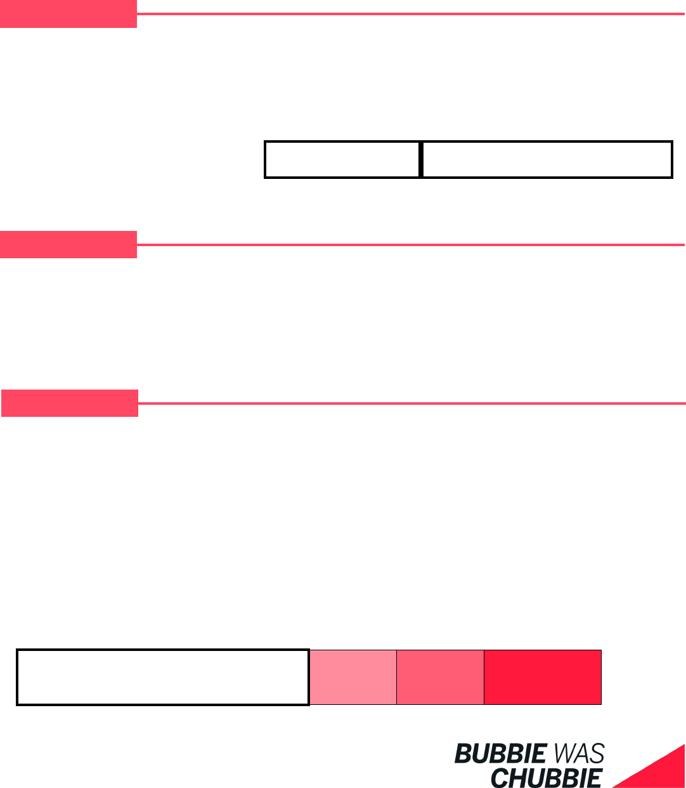
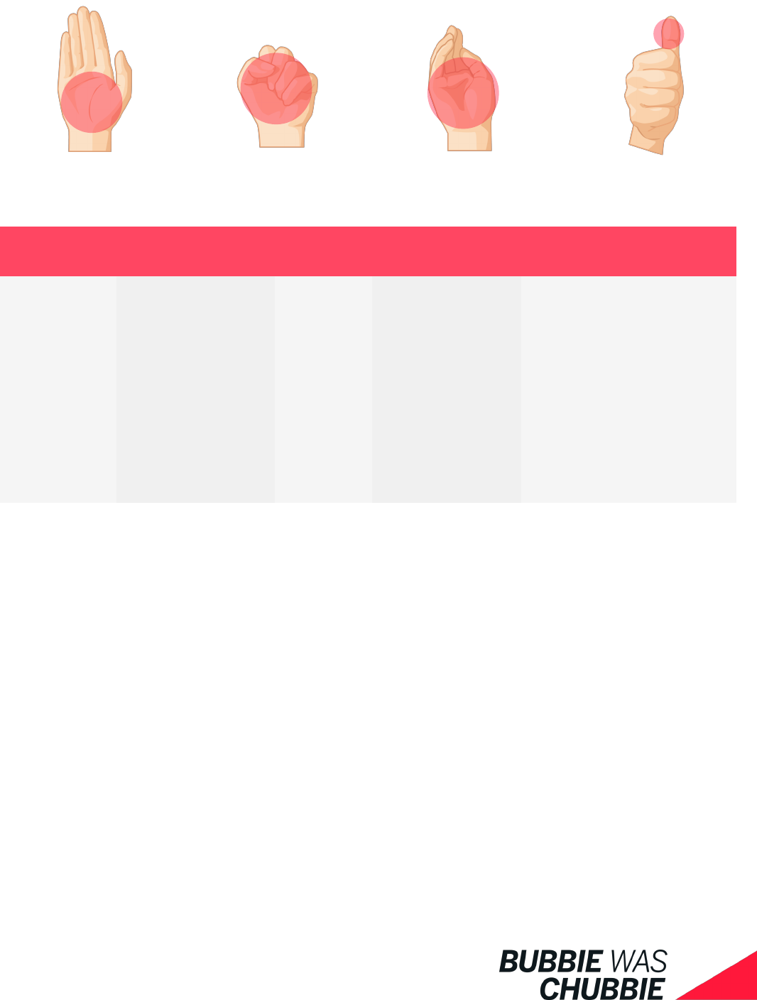
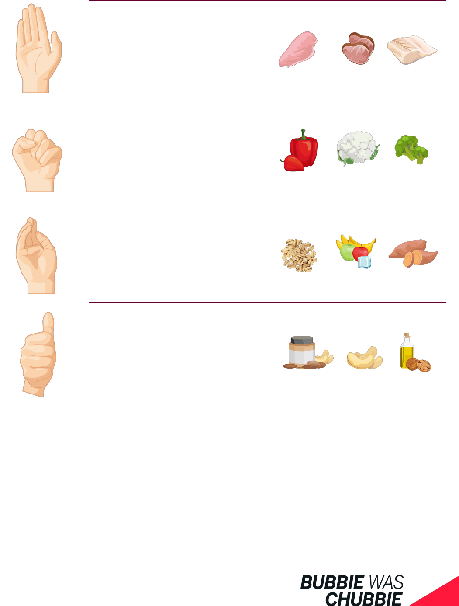
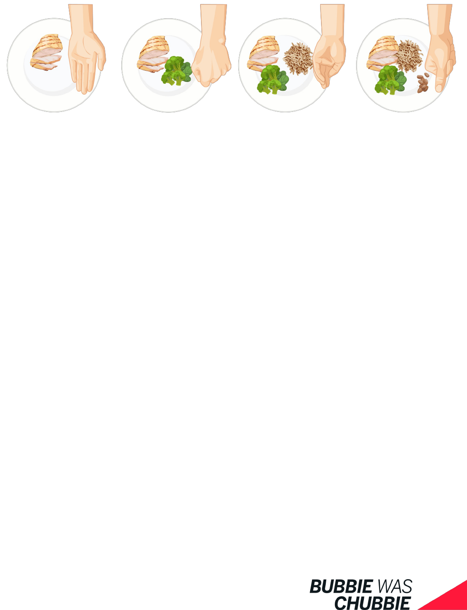
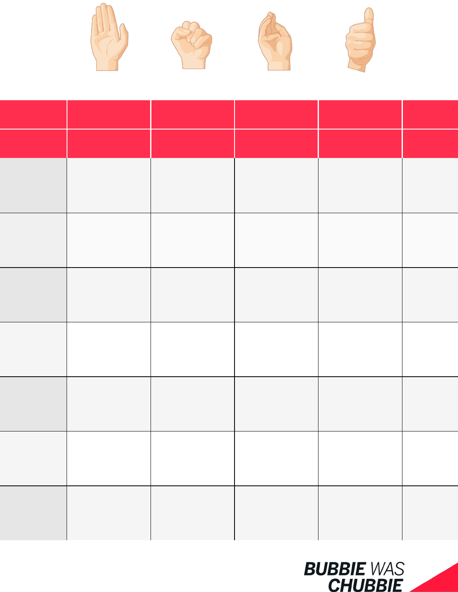
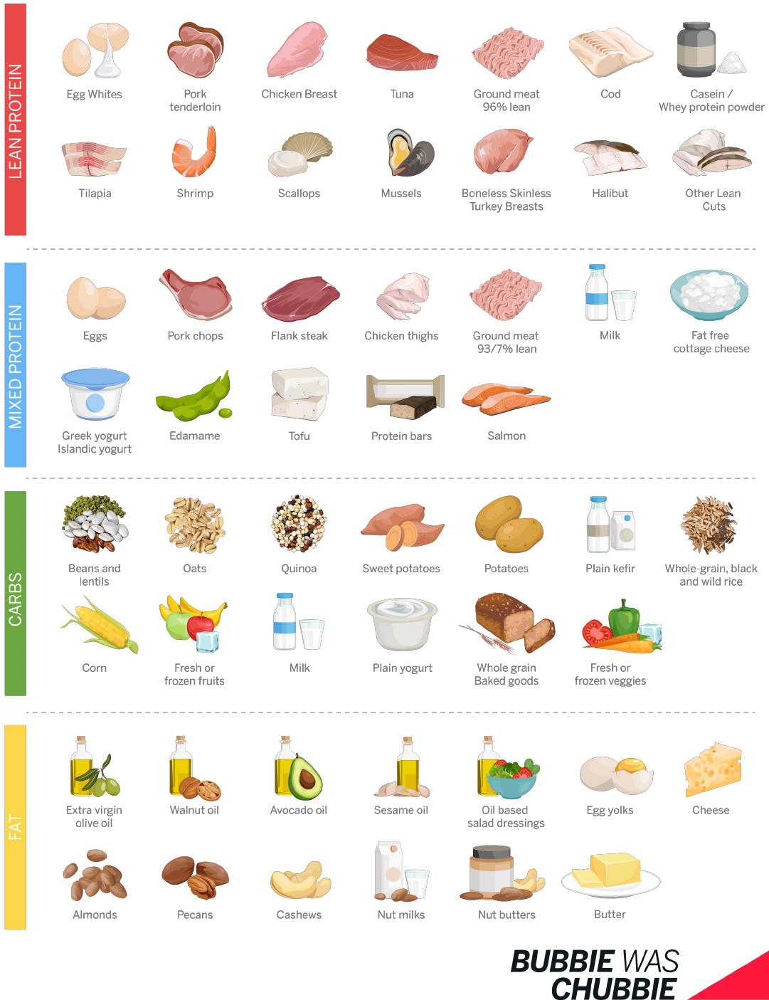
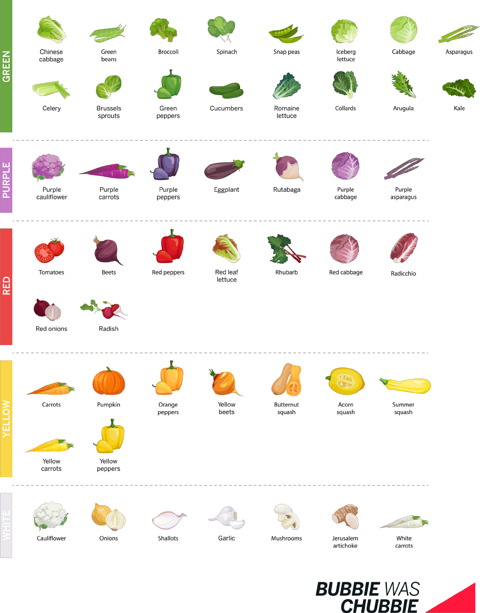

Personalized Weight Loss Guide
Prepared By
Michael Laub
MICHAEL’S

Congratulaons
You have taken the rst step to becoming a healthier individual you want to be-
come. This is your personalized guide to assist you in hing your weight loss
goals.
Remember good things take me and hard work, to achieve!
This Guide Will Outline
Your Individual Diet Numbers
How Fat Loss Works
Methods For Calorie And Macro Tracking
Hand Size Porons
What To Eat
Diet Smarter
Skills To Acquire
Signs Of Progress
Making Adjustments
Some Tips And Mindset Changes
How To Maintain Weight Loss
There is a lot of informaon in this guide, keep it handy, just incase you need to
refer back for later use.
You Got This!

Feel Beer
Condent
Lose Weight
Maintain Weight Loss
40 %
Carbs
30 %
Fat
30 %
Protein
AGE
20
SEX
FEMALE
WEIGHT
165
HEIGHT
5’8
Acvity Levels
Macros Nutrient Rao
Light
WEEKLY WEIGHT LOSS
1.65
GOAL WEIGHT
165
CALORIE BUDGET
1300
PROTEIN
97 g
CARBS
130 g
FAT
43 g
About You
Your Goals
Your Diet Numbers
Calculaons
Below you will nd the factors, I used to determine your unique caloric needs to reach your
weight loss goals. These are esmaons based o your starng point, overme as your body
changes and make lifestyle alteraons, modicaons are likely needed.
How Weight Loss Works
Weight loss at its core is about creang a calorie decit, consume less calories from food,
than your body burns in a day. Calories In < Calories Out = Weight Loss
Calories Burnt
Everyday you expend a certain amount of calories to funcon. This is split up into four catego-
ry's generally.
BMR | Bare minimum amount of calories to maintain vital bodily funcons, think calories
burned while asleep.
TEF | Amount of calories required to break down and process the food we eat.
EA | Calories burned while performing exercise acvity.
NEAT | Calories burnt while doing everything else in a day, like walking, cleaning the
house, dgeng, standing, etc.
Add these factors up and you get your total daily energy expenditure (how many calories you
burned) EA and NEAT are the daily factors you can aect most.
Calories Consumed
Based on the macro nutrient, your body can absorb a certain amount of calories. The total
calories from a serving food can be calculated by adding up the macros
Fat has 9 calories | per gram
Carbohydrates have 4 calories | per gram
Protein has 4 calories | per gram
Alcohol has 7 calories | per gram
Add everything consume in a day and you get your total calorie intake.
Math of Fat Loss
If your in a calorie decit, the body has to get calories from somewhere, ideally from stored
body fat.
A pound of stored fat contains around 3,500 calories.
So if you create a -3500 calorie decit, by eang less and or moving more, you will lose rough-

Hing Your Targets
To achieve your weight loss goals you must focus on staying with in your daily calorie budg-
et.
Almost everything you consume has some caloric cost, for every bite, sip, and lick your calo-
ries begin to add up. It can be very easy to under esmate the amount of calories you are con-
suming and easy to overesmate calories burned during exercise. Leading to slow or no
progress when dieng.
Most people are unaware to the calorie and macro content of the foods they eat, because
they have never tracked or paid aenon to their intake. That is why it is important to have
dierent methods to more accurately assess the amount of calories you are consuming.
From the data you collect, you are able to make beer food choices, more aligned to your
weight loss goals.
Methods
Reading nutrional labels
Poron control with your hands
Using a food scale and measuring cups
How Fast Can I Hit My Goal: How fast you can hit your goal weight is dependent
on how consistent you can adhere to your plan and maintain a calorie decit.
Generally fat loss will be fastest when you rst start dieng and as you become
leaner it will slow and more adjustments will be needed. If your starng weight is
higher, you can be more aggressive with rates of weight loss a week.
A realisc rate of weight loss can range from 1.5% (extreme) to .5% (comfortable)
body weight per week.
For a 250 pound man that’s 3.75 pounds to 1.25 pounds a week.
For a 160 pound woman that's 2.4 pounds to .8 pounds a week.
Tracking Your Calories
One of the most common reasons diets fail is the fact that people think they are eang less
calories than they actually are. You need methods to more accurately gauge your intake, be-
side just guessing what you ate.
Reading Nutrion Labels: You may start by trying to hit your goals just by reading labels
and looking up nutrion facts online. Just bringing more awareness to what you eat, can bring
you big results
Keep track of the calories you consume on a paper, note app, or a calorie tracking app and try
to stay under your calorie budget.
Food Scale And Measuring Cups: If you want to be as accurate as possible it is best to
pull out a food scale and some measuring cups to hit your calorie and macro targets precisely.
I suggest everyone use a food scale at least for a week or two at some point, it can be truly
eye opening to see what the actual serving size of foods are.
While using a food scale it best to use a calorie tracking app as well, like MyFitnessPal.
Most people (even health professionals) are not very good at esmang calories because they
have never truly tracked with extreme precision. Knowing how to use a food scale can be in-
valuable skill, especially if your progress stalls.
Hand Size Poron: The food scale thing might be too overwhelming for some people, If
that’s the case for yourself try using your hands to poron meals.
This is a reasonably easy method to track your eang and for some can be just as ecacious
as using a food scale.
Which Is The Right To Choose?:There are some pros and cons with each of these meth-
ods. Each has it place in successfully dieng and achieving goals. I think trying each out at
some point is benecial.
Start with the one you can adhere to most, and gives you the results you seek.
As you loose more weight you may need to employ more precise techniques to maintain pro-
gress.

Acvity
Your calorie calculaons were determined based o your current acvity levels. If you in-
crease or decrease the amount of acvity you do, your rate of weight loss will change. If you
were to increase the amount of acvity you do and keep hing your calorie target, you
would lose more than I esmated.
“You can’t out run a bad diet” I am sure you have heard this before. Generally what happens
is people will tend to overesmate the amount of calories they burned from doing cardio and
underesmate calories they eat (we solve this by tracking data), a perfect storm.
They feel like they burned 1,000 calories from their 40 min bike ride, realiscally they burned
300-400 calories.
I make this point to be cauous of adding back in calories based o of what you think you
burned during exercise. I am not saying don’t add any food back in, just be aware that the
number on a machine may not be accurate as you think.
I think it’s a good idea to track your acvity levels so later on if you need to make adjustments
you have data available. You can track with a tness watch, your phone, or just remembering
what you do.
Its good to have roune of weekly acvity, so you have a baseline to adjust from. This might
be (x) amount of daily steps and (x) cardio sessions a week. If progress stalls you can adjust as
needed.
Acvity Ideas: Geng acve doesn't mean you have to do some grueling 60 min cardio ses-
sions or 20 min HIIT workouts. Find something you enjoy doing to get acve.
I suggest starng with what you can sck with for a while. If that’s a 20 min daily walk, or if
that's 30 min daily bike ride, just get moving.
On top of doing cardio, it also a good Idea to incorporate some form of strength training into
your plan. Liing weights while dieng can help preserve muscle mass, which is what you
want. If you loose most your weight from fat that’s a good thing.

Hand Sized Porons
Calories Macro Nutrients Measurement Esmate Hand Porons
Protein 140
30g protein
2.5 g fats
3-4 oz of cooked meat
1 scoop protein powder
1 palm
Vegetables 25
5g carbs
1.5g protein
1 cup of vegetables
1 st
Carbs 120
25g carbs
3g protein
1/2 | 2/3 cup cooked grains
1 medium fruit | potato
1 cupped hand
Fats 110
11 g fat
2 g protein
1 tbsp nuts, oil, seeds
1 thumb
These numbers are approximaons. Using your hands as a measurement tool is not about be-
ing extremely precise, it is about having an easy method to get close enough to your targets.
Why Use Your Hands
Hands are simplied method for esmang calorie and macronutrient intake.
Hands are consistently the same size, meaning your poron sizes will be the same, allowing
for easy poron adjustments if needed.
Hands are portable, allowing you to poron control and calorie count a meal even when you
are away from home.
Serving of Vegetables
1 st
Serving of Carbs
1 cupped hand
Serving of Fats
1 thumb
Serving of Protein
1 palm

4 palms of protein
(or 97g)
6 st sized porons of vegetables
5 cupped handfuls of carbs
(or 130g)
4 thumb sized poron of fats
(or 43g)
Your Hand Poron Targets
This will provide you with roughly 1300* calories , which is the caloric budget, we determined,
you need to hit to achieve your weight loss goals.
Split the porons amounts through out the day into meals and snacks in a way that best suits
you.
The macro amounts are your targets if you decide to use a food scale.

How to track
Through out the day, as you build your meals, have snacks, you need to keep track
of your intake.
This meal above has one serving of protein (chicken breast) one serving of vegeta-
bles (broccoli) one serving of carbs (brown rice) one serving of fats (almonds).
Based o the hand poron esmates a meal built this way would contain roughly
(400 calories 35 grams of protein, 30 grams of carbs, 13 grams of fat)
On the next page you will nd a tracking sheet with your targets. Try to hit your
targets as consistently as you can, to get the best results.
When you have a poron you could track it by drawing a circle on your sheet un-
der the specic macro source. Half circles could mean half a poron. Or you could
use numbers, check marks, whatever you want.
Just be sure to have a system to track intake with.

Hand Poron Tracking Sheet
Calories
Per Poron
140 25 120 120
Per Day
Calorie Total
Monday
Tuesday
Wednesday
Thursday
Friday
Saturday
Sunday
Protein
Vegetables Carbs Fats

Choosing What To Eat
It is easy to fall into the trap of black and white thinking, while dieng, labeling foods good or
bad. When dieng, choose to have a more exible atude with foods, think of foods on a
spectrum of more ideal to less ideal.
The foods that ll you up most and provide plenty of nutrients are more ideal. The less ideal
choices being hyperpalatable (easy to over eat) foods that are high in
calories, low in the nutrients, and don’t ll you up as much.
People like to say if you don’t avoid certain foods you won’t loose weight. You could eat only
twinkies and sll lose weight, denitely not ideal, but sll possible. Rather than excluding less
ideal foods completely from your diet, just choose to have them less oen. Being too rigid
and only eang diet foods for weight loss can lead to failure in the long run, because it is not
sustainable.
If you hit your protein target and want to have some of your carbs and fat intake from less
ideal foods that’s ne.
Long term success is about trying to make beer choices, nd that happy medium of healthy
and fun foods, What you can do consistently to maintain your health. If you need a kit kat or
some ice cream once a while, have it and just move on.
One ice cream cone, one glass of wine, one decision, one day, won’t dene being successful,
rather the sum of your dietary choices over weeks and months.
In the end it is your choice, you want to have less ideal “fun” food while dieng because
you can be more consistent, with your overall diet, that’s ne.
If these fun foods prevent you from hing your goals faster, its ok not to include them as
well. There is no rule saying you have to eat less ideal foods. Do what works best for your
goals.
Eat more lean protein, veggies, fruits, complex carbs, healthy fats, ber, do that and you got a
fairly robust diet.
On the next pages you will nd a list of foods. Pick the foods you enjoy most and incorporate
them into your diet.

Protein Carbs and Fats Sources

Vegetables

Diet Smarter
Control Your Food Environment: This is probably the most impacul thing you can do to
make dieng easier. Fill your kitchen with foods that align to your goals and remove the ones
that don’t. Out of sight, out of mind. Only buy what you intend on eang. Maybe before
starng your diet do a kitchen clean out!
Buy Pre Packaged/Cooked Meals: Don’t have me to weigh out your food or meal prep.
Stock up on pre package meals. Think Protein bars, lean cuisine meals, Greek yogurts, frozen
vegetable bags. The calories with these meals are close, making it an easy way to stay with in
your calorie budget.
Eat The Same Meals: This might mean every day you make the same protein shake for
breakfast and eat the same chicken salad for lunch. You know exactly how many calories are
in those meals and don’t have to worry about looking it up each me. Also reducing the
amount of decisions you have to make for your diet.
Meal Prepping: If you have food that’s ts with your weight loss goals on hand when life
gets busy, your much less likely to fall o your diet. meal prep on days when you have me to
or subscribe to a meal prepping service.
Bulk Cook Foods: Instead of worrying about making complete meals, consider preparing
large quanty's of individual ingredients. Pre cook a whole package of chicken breast, bake
loads of veggies, steam a few cups of rice, etc. Have these bulk ingredients cooked and ready
to throw a meal together quickly.
Find Lower Calorie Opons: They have goen prey good making tasty diet friendly
foods. Are you craving ice cream, try one of the lower calorie opons out there (halo top, en-
lightened, etc.) Craving a soda, try out the diet version. These lower calorie opons are sll
good enough to sasfy cravings somemes and keep you on your diet. Arcial sweeteners
are ne as long as you don’t get an upset stomach from them. Remember Dieng is about
making beer choices.
.

Skills
Achieving weight loss and keeping it o will require development of new skills.
Here are some key ones and ideas of how to pracce them.
Keeping Acve
Set an exercise schedule
Find exercises you enjoy
Move more outside of exercise
Rest and Recover
Improve sleep habits and envi-
ronment
Manage stress levels
Calorie Intake Matches Goal
Tracking food/calorie intake
Gather data make alteraons when
needed
Create an Ideal Environment
Stock your kitchen with ideal foods
Surround your self with posive
people
Remove obstacles from you life
Ask for help
Get the tools needed
Manage Eang Habits
Eat slowly and mindfully
Observer hunger and fullness cues
Develop eang roune
Separate eang for hunger from
stress eang.
Eat Nutriously
Eat lean protein most meals
Consume plenty of veggies and
fruits
Eat more complex carbs
Healthier fat consumpon
Stay hydrated
Supplement when needed
Planning and Priorizing
Make me
Focus on the most impacul next
step to hit your goal/s
Make It Easier
Break your goal down into small
eecve steps
Lean into your preexisng strengths
Idenfy liming factors
Choose Higher Quality Foods
Eat less processed diet
Add more whole foods
Try new foods
Choose beer opons based o
your current food choices

Indictors of Progress
It is important to look for improvement in many dierent aspects of your life. No maer how
big or small, progress is progress!
Scale Weight: The scale itself is a great tool to track weight loss, it is normal to be have
weight uctuaons day to day. I suggest geng a smart scale that will graph all your data. To
gather the most accurate data, weigh in under the same circumstances. Ideally in the morn-
ing, in your underwear, aer using the restroom, and fasted.
Photos: Taking photos can be a great way to see the changes in your body even when scale
weight may be stalling. To make the photos are an accurate measure of progress, try taking
them in the same condions. Take the photo in the same lighng environment and same
clothes. You might take photos once a week
Feeling Beer: On top of looking beer and weighng less you also want to feel beer. That
might mean you are sleeping beer, have more energy during the day, able to exercise more,
stress reducon, overall mood improvement, or just feeling more condent. Try keeping a
journal and look for improvements over me.
Health Markers Improving: Blood markers are a great objecve measure of progress.
Look for improvement in blood lipids, glucose levels, blood pressure. I suggest geng roune
blood work at least two-mes a year to track health improvements. Please check your blood
more than you check the oil in your car.
Habits Are Changing: Lasng change means adopng a new normal. Have you been exer-
cising regularly, are you meal prepping more oen, eang veggies more oen. Are you snack-
ing less oen? Is your lifestyle more conducive to where and whom you want to become?
Every now and then take a moment to think about the progress you have made.
How Clothes Fit: You start needing to purchase new clothes because they don’t t like they
used to.

Weight Loss Plateaus
Like I said, if you are weighing yourself daily, please be aware the number on the scale will
uctuate up and down (lbs. somemes). Try not to let it bother you! Don’t be overly quick to
change your diet plan.
There could be a host of reasons your body “weight” uctuates day to day. Some might be,
you had a stressful day, your dehydrated, a high carb meal, higher salt intake, larger meal the
day before, conspaon. The scale weight uctuaons most of the me come down to some-
thing causing water or food retenon.
Let this highlight the fact there is a dierence between “weight gain” and fat gain. Pay aen-
on to scale weight trends overme (weeks), not one day.
Somemes you just have to be consistent with your plan and be paent and the weight loss
will follow eventually. How aggressive your dieng and depending how long you have been
dieng will dictate when you might need to make changes.
If over a week or two, when you rst begin your diet you don’t see any changes you can be
quicker to make adjustments.
If you have been dieng for a while or your going for a slower rate of weight loss you may
want to wait three to four weeks before making adjustments.
Why Weight Loss Slows Or Stops: One reason could be your eang more than you think
you are, and are no longer in a calorie decit.
Another is the fact your calorie budget was determined from your starng weight and acvity
levels. As you get closer to your goal weight, the amount you lose will slow.
As your body weight drops, the total amount of calories you burn in a day goes down. Mean-
ing the size of your calorie decient will be smaller compared to when you rst started di-
eng. This is not metabolic damage, just the fact smaller people burn less calories.
Some peoples bodies will adapt to dieng by moving around less. That why I would suggest
keeping a daily/weekly step count to combat some of this adaptaon.
A weight loss plateau is a sign that you have made progress, not that you failed.
Your Goal: Dieng generally will get harder the leaner you try to get. Keep this in mind, if
you had x weight as your goal, maybe being x lbs. heavier is where you actually want to be at,
because it sustainable for you. Maintenance can be just as hard as dieng.
Be exible with your goal. Remember weight loss is more than just a number on a scale it is
also about how you feel, look, and what you can sustain long term.
There might come a point where it is a beer idea to work on maintaining your weight loss
rather than connuing to push to lose more. This is a decision, you get to make, based o
your physical and phycological state at that point in me.
Adjustments: Before you change anything, do an dietary and acvity audit, have you been
eang more, not tracking as accurately, have your daily acvity levels decreased? You got to
honest with yourself and adjust based o your assessment. Maybe you don’t need make any
adjustments, just be more consistent overall or more precise.
If you want to connue making or speed up progress you can either reduce food intake or try
increasing acvity. Choose what works best for you. Aer making changes you must wait and
see if progress follows.
Reduce Calories Add Acitvity
Reduce your daily calorie
budget by 200.
Remove the calories from ei-
ther fat or carb servings. Keep
protein intake the same.
In hand size porons you
would take 1-2 servings from
either thumb or cupped hand
porons.
Add in 20 mins of cardio
Add in 30 - 40 min of more
walking (NEAT)

Hungry all the me?
When your rst start dieng, most of the me, hunger is not a problem. As you get deeper
into a diet you will become hungrier and hungrier. Here are some ways you might try to allevi-
ate some of your increased hunger,
Depending on your goal me frame, it might be a good idea to have a free meal where you
get to have what you want to eat, to take a break from dieng! Giving you a mental reset.
If your consuming calories from liquids, swap them out for whole foods you have to chew
instead.
Add more protein and or vegetables to your diet by replacing a serving of carbs or fat.
Be sure your consuming plenty of uids, this can be water, zero calorie drinks, tea, etc. You
want to be staying hydrated.
Reduce the amount of “fun foods” in your diet (candy, ice cream,) these foods are calorie
dense so they won’t ll you up as much as chicken or broccoli would.
If sleep is not great and stress is high, you might want to work on improving it to help re-
duce hunger.
Try increasing ber intake, through swapping out low ber content foods for high ber
ones or using supplements if your sll trying to nd high ber foods you like. Be careful
too much ver can cause Gi distress.
Find something that engages you, to take your mind o food.
If you are scarng down meals rapidly, pracce slowing down the pace of your eang.
Caein (coee with zero sugar sweetener is low calorie way to get a cup of coee in)
Exercise might be helpful, but too much can increase hunger
Even with all these ps, there will be mes when your going to be a lile hungry.

Tips
What Helps You Hit Your Goal: Is watching Nelix all day conducive to you losing weight?
Buying foods you might over eat? Always ask yourself “does this get me a step closer or a step
further from where I want to be”. Focus on what drives progress toward your goal.
Remember Your Why: At those moments when you want to give up, remember what's
pushing you to be dierent. Is it for health, your special event, want to feel more condent.
Having a strong reason to want to change will get you through the tough mes and low mo-
vaon moments.
Reward Yourself: Changing your habits is hard, but what makes it easier is making your-
self feel good when you accomplish something that helps you reach your goals. You go for a
walk, aer that walk, tell yourself “good job!” You meal prep for the rst me, pat yourself on
the back. You may not always have supporve group around you to tell you good job, but you
have yourself. When you praise yourself for ideal behaviors or habits, your much more likely
to adopt them long term.
Take It Day To Day: If weight loss was easy everyone would do it. There will be ups and
downs to your weight loss journey, but when you break it down to “one day at a me” you
make hing your goal/s much more manageable. Three months of dieng can seem
daunng, but one day “that’s doable”.
Enjoy The Process: Living a healthy lifestyle is a life long commitment, learn to enjoy the
day to day tasks and foods that help you achieve and maintain your new healthy lifestyle. If
your able nd enjoyment in the process of what you do and eat daily, your much more likely
to sck with it for the long run.
Stay Flexible: When you rst start dieng you may be able to be extremely rigid and compli-
ant to your plan to lose weight, but life is bound to intervene at sum point. Learn to adjust
your plan according to setbacks and connue making progress.
Find What Works For You: One size does not t all, there will always be a new diet and
weight loss programs that promises “this is the magic pill”. You must nd what strategies,
foods, acvies, gets you results.

Mindset Change
Changing how you think about situaons and yourself is a great way to promote change in
your life.
Be Ok With Being Uncomfortable: Change is not always easy, there will be points in your
journey when you will face challenges that will push you out of your comfort zone. Whether it
be altering exisng eang habits, intensely exercising, delaying gracaon, not partying as
much, being hungry, etc. In the moments you step outside of your comfort zone, you experi-
ence the most potenal for growth.
Failing Is Ok: To nd what works in your life, you will have to test out dierent things, inevi-
tably leading to failure. There might be a week where you fall o your diet and gain some
weight. Instead of focusing on the negave, make it a posive. Look at a slip up as an oppor-
tunity to learn. Every mistake helps you get one step closer to your goals because you nd out
what doesn't work for you.
Aim For Beer: Instead of trying to be perfect all the me, try to be beer. Imperfect
acon is beer than no acon. This might mean going for a 5 min run instead of no run. hav-
ing a smaller slice of cake, instead of a huge one, changing your regular soda to diet, adding
one more serving of vegetables to your diet, etc.
These small wins may seem insignicant, but over me they compound into you reaching
your goals.
Don’t Be A Stasc: Nowadays all you hear is how hard dieng is and how it is impos-
sible to keep weight o. Choose to be dierent from the norm and create your own path.
Nothing is wrien in stone, you can accomplish anything no maer the odds.
You Can Achieve Anything: No maer your starng point, as long as you are able to con-
nue to try, you can hit your goal. If you have never dieted, you can get beer. Never exer-
cised before, you can improve. What you want to achieve is possible when you put in eort.

How To Keep The Weight O
Congrats you hit your goal, now what? Well I hate to say it “keeping it o can be just a tricky
as losing it”. Think of maintenance as a range, it may change from week to week, up some
down some. When you gain back more than you like, just do mini diet.
To maintain your new weight, you can’t revert back to old habits and behaviors that caused
you to gain the weight in the rst place. You must build a new normal conducive to weight
loss maintenance. Here are some good habits that help with maintaining your new weight
Watch Out For Regain: One of the greatest predicters of people who keep weight o is daily
check ins. This might be from weighing yourself on a scale, nocing how cloths t, looking in
the mirror, etc.
Eat Most Meals With Protein And Vegetables: Eang this way helps you stay full, sased
and hits those dietary check boxes for beer overall health.
Keep Up An Acve Lifestyle: Remaining acve allows you to consume more calories at
your new weight, making it much easier to maintain.
Be Around Healthy People: Your habits are shaped by those you spend most me with.
Establish New Goals: Train for a marathon, try to build muscle, learn to cook healthy meals,
make goals that are conducive to keeping the weight o and give you something else to work
towards.
Eat Out Less: which allows you to have more control and idea of what is going into the food
you eat. Generally speaking meals in restaurants are higher in calories.
Reduce Stress: Too much stress can lead to an increase in eang those comfort foods, and
falling back into old habits.
Create Some Type Of Accountability: Schedule check ups with your doctor,
coach, or a friend.
Keep Healthy Foods At Home: If you want a snack food you can go and get it. Keep your
eang environment lled with highly nutrious foods that are less likely to be over eaten.

Closing Word
To become the healthiest version of yourself is going to take me and eort. It won’t only be
about transforming your body but also your mind. Don’t try to rush results, it is not a race
rather a marathon.
Somemes it is going to be hard, but that’s ok.
Pracce self compassion when trying to hit your goal remember your not a robot and proba-
bly will make some mistakes. Just like many other things in life the more you pracce the
beer you get.
Somemes it can be paralyzing trying to be to perfect in order to achieve your goals, remem-
ber progress is about being beer overme, not perfecon. Take it step by step, day by day. At
a some point all your hard work will pay o!
Do more, rather than thinking about what to do!
If you really want to change all you have to do is connue TRYING, eventually you nd that
secret formula that works for you.
Life is about choices
There will always be distracons or reasons not to change. Take acons today that make your
future beer. Choose to focus me and energy on what's important to you.
If you have a slip up remember, there is always another day to get beer.